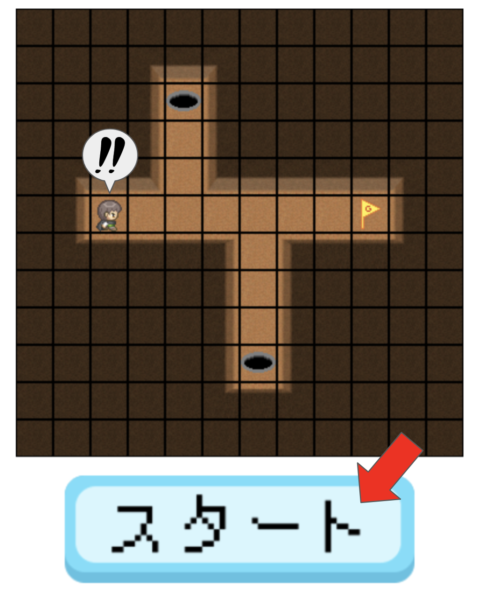
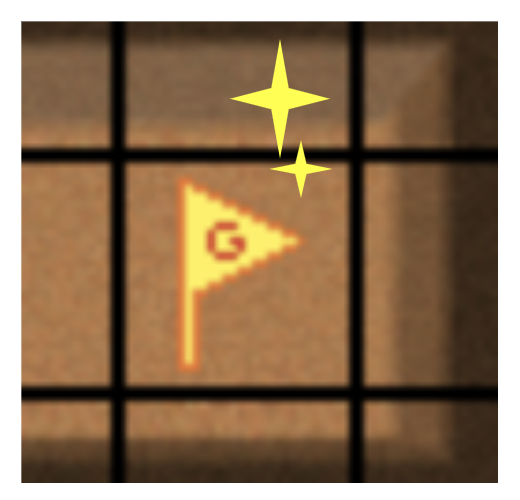

あそびかた

初めて遊ぶなら「はじめから」をおしてください。
もう遊んだことがあったら「つづきから」をおしてください。
もう遊んだことがあったら「つづきから」をおしてください。

赤い矢印ボタンでステージを選んで「ゲームスタート」をおすとゲームが始まります。

右側でブロックを組み立てます。

「スタート」をおすと、組み立てたブロックを読んで、キャラクターが動きます。

ゴールの旗のところにたどり着けるようにプログラムを組みましょう！

ブロックはそれぞれ「コスト」をもっています。
できるだけコストが小さくなるようにブロックを組みましょう！
ブロックをくっつけるとそのブロックの「コスト」の分だけ、ゴールドが少なくなります。
ただし、ゴールドが0より少なくなるとスタートできないので気をつけましょう！
できるだけコストが小さくなるようにブロックを組みましょう！
ブロックをくっつけるとそのブロックの「コスト」の分だけ、ゴールドが少なくなります。
ただし、ゴールドが0より少なくなるとスタートできないので気をつけましょう！
ブロックの組み立て方
右側の場所でブロックを組み立てます。

見本をドラッグすると、そのブロックが取り出せます。

取り出したブロックは、凹んでるところを近づけるとくっつきます。

「この中につなげた動きがくり返されます。」のブロックにくっついているブロックを読んで、キャラクターは動きます。